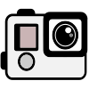

GPT - The GoPro Tool
Details
| Description | GTK+ GoPro media footage organization tool |
| Status | Beta |
| Language | Python |
|---|---|
| Role | Maintainer |
Features
- import your stuff from SD card
- rename files in a more logical order than according to the GoPro naming convention
- keep an eye on your footage, directly rename folders
- create timelapse videos from your stuff via FFmpeg
- localization: English, German
- open folder content as Kdenlive project
- extended application window with fancy video preview and media information (requires GStreamer and MediaInfo)
